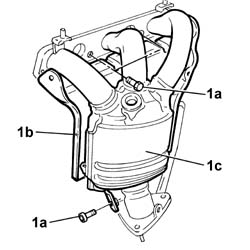

1076A72 RIGHT catalytic preconverter HEAT SHIELD - R.R.
- Path
- Procedures > 10 ENGINE > 1076 EXHAUST PIPES AND SILENCERS > 1076A exhaust pipe fastenings and protections > 1076A72 RIGHT catalytic preconverter HEAT SHIELD - R.R.
- Kind
- repair procedure (removal / refitting; the operation number is the code)
- Applies to
- engines: 3.0 V6, 3.2 V6; all production periods
- Interactive page
- https://sloeber94.github.io/elrnDB-lThss/en/#/187441
Applies to: engines: 3.0 V6, 3.2 V6; all production periods
 Removing
Removing
 Refitting
RefittingSee in Op. 1080B39 RIGHT CATALYTIC PRECONVERTER - R.R. or Replace Gasket
1. Working at the bench, undo the three bolts (1a) fixing the heat shield (1b) to the preconverter (1c) and remove it.

Applies to: engines: 3.0 V6, 3.2 V6; all production periods
Refitting
Removing- Position the heat shield and tighten the bolts fixing it to the precatalyzer.
See in Op. 1080B39 RIGHT CATALYTIC PRECONVERTER - R.R. or Replace Gasket